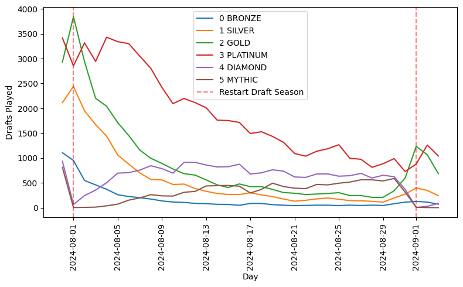
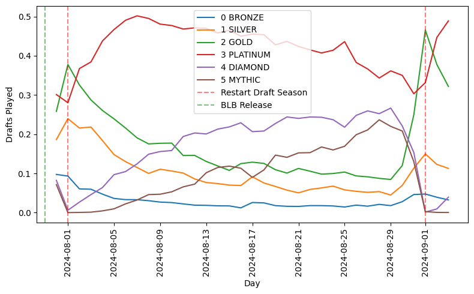

--------------------------------------------------------------------------- FileNotFoundError Traceback (most recent call last) Cell In[5], line 32 11 ordered_ranks = { 12 0: "bronze", 13 1: "silver", (...) 17 5: "mythic", 18 } 20 ordered_ranks_df = pl.LazyFrame( 21 {"rank_value": list(ordered_ranks.keys()), "rank": list(ordered_ranks.values())} 22 ).with_columns( (...) 26 ) 27 ) 29 ranks = ( 30 ordered_ranks_df.join(draft_rank, on="rank", how="left") 31 .sort("rank_value") ---> 32 .collect() # Execute the lazy frame 33 ).to_pandas() 35 ranks["win_rate"] = ranks["n_wins"] / ranks["n_games"] File ~/miniconda3/envs/dl+bayes-env/lib/python3.12/site-packages/polars/lazyframe/frame.py:2027, in LazyFrame.collect(self, type_coercion, predicate_pushdown, projection_pushdown, simplify_expression, slice_pushdown, comm_subplan_elim, comm_subexpr_elim, cluster_with_columns, no_optimization, streaming, engine, background, _eager, **_kwargs) 2025 # Only for testing purposes 2026 callback = _kwargs.get("post_opt_callback", callback) -> 2027 return wrap_df(ldf.collect(callback)) FileNotFoundError: No such file or directory (os error 2): data/processed/17lands/game_data/premier_draft/All_Sets_Game_PD_Drafts.parquet This error occurred with the following context stack: [1] 'parquet scan' failed [2] 'group_by' input failed to resolve [3] 'sort' input failed to resolve [4] 'join, right' input failed to resolve [5] 'sort' input failed to resolve
Bloomburrow (BLB) Arena Draft Analysis
EDA
Draft
BLB
Arena
Draft set analysis for Bloomburrow
1 Player Rank
To assess player skill, I plotted the number of wins by player rank. While I don’t have player IDs to track individual performance, this view provides an average performance snapshot of the player base. Additionally, since I cannot track the number of drafts per player, more frequent players will be over-represented in the data.
Although opponent rankings are not available, we can infer that most opponents are of similar rank due to Arena’s draft system, which matches players with similar records. Each ranked season lasts about a month, and ranks experience “rank decay” between seasons. This decay means that at the start of a new season, a player’s rank is lower, requiring them to play more games to regain their previous standing.
Therefore, our snapshot of each rank includes a mix of lower-skill players who have reached their peak at the end of the season and higher-skill players at the start of the season who are climbing back up the ranks.
In Figure 1 we see that most drafts are played by players in the Platinum ranks.
In Figure 2, we observe that win rates vary by rank, with higher ranks generally achieving higher win rates. The Bronze rank has by far the lowest win rate, reflecting new or less skilled players. Interestingly, the Silver rank shows the highest win rate, likely due to the influx of Gold and Platinum players who reset to Silver at the start of the season and quickly climb back up the ranks.
For each rank, I plotted the win rate for the last week of play compared to the earlier timeframe. In Figure 3, we see a decline in win rates for higher ranks but an increase in win rates for lower ranks. This pattern suggests that higher ranks may become more competitive as the season progresses, while lower ranks tend to become more casual.
Figure 4 shows the number of games played per draft for each rank. While not identical, the pattern closely mirrors the previous chart of win rates.
1.1 Ranks over Time
We then examine the number of drafts played at each rank over time in Figure 5. Since the BLB set was released two days before the season start, I truncated the data at 08-01 to avoid the effects of rank decay.
The initial days are chaotic, with the BLB set launching on 07-30, and 07-31 being the first full day of recorded games. On 08-01, the new ranked season began, causing rank decay, which is especially noticeable in Mythic and Diamond gameplay.
Starting on 08-01, we observe distinct patterns: Gold rapidly declines after an initial peak of 3,800 drafts per day. Platinum peaks during days 4-6 before dropping. Diamond shows a slower climb with a plateau between days 8-13, followed by a gradual decline. Mythic starts at zero and slowly climbs, reaching a peak of 500 drafts per day around days 13-16.
From this chart, it’s unclear how much of the decline at each rank is due to player advancement versus a loss of interest after the initial excitement of a new season. In the following charts, I will normalize the data to the total drafts played to better account for the overall decrease in gameplay.
Total Time Interval: 209 days

In Figure 6, we see the number of drafts played over time. It’s notable that the release of BLB and the start of the new season coincided, driving high player interest, with a peak of 11,300 drafts on 07-31. The rate of play decayed over the weeks, reaching a low of 3,100 on 08-17.
The decline is nearly monotonic, with slight increases on the Saturdays of 08-04 and 08-11, indicating that weekly seasonality has only a minor impact.
Releasing new sets clearly boosts player engagement. However, the introduction of the new season on 08-01 does not appear to have significantly increased play, though this observation is tentative. This data highlights the economic motivation for releasing new sets to drive digital engagement on Arena, and it’s likely that paper play would follow a similar trend, with increased draft activity consuming more booster packs in the weeks following a new set’s launch.
It would be valuable to compare this pattern across different set releases to better understand the player base’s set-by-set preferences.
Next, we normalize for the total games played to observe the relative ranked play across the player base, as shown in Figure 7.
This normalization highlights the relative activity at each rank more clearly. After the season starts, Gold exhibits a linear decay as players progress to Platinum. Platinum maintains a prolonged plateau, indicating a balance between new players entering the rank and existing players advancing.
Diamond and Mythic both start with minimal participation but gradually increase in play almost monotonically, albeit at different rates.

1.2 Low vs High Rank Players
Now, let’s compare player rank performance against success by focusing on the three two-color decks that were outliers in the previous use-rate versus win-rate chart.
| Deck | Use Rate | Win Rate |
|---|---|---|
| BG | High | High |
| BR | Low | High |
| UR | Very Low | Extremely Low |
In Figure 8, we analyze the overall performance of players using these decks, categorized by the week of play and whether the player is in the elite ranks of Diamond or Mythic.
For BG, the most played deck, performance across weeks and ranks shows no clear trend. However, for the BR and UR decks, which are less frequently played, players in both elite ranks demonstrated noticeable improvements in win rates from week one to week two. This suggests that the 17Lands player base adapted and learned to optimize these less favorable decks, regardless of their rank.
It’s important to note that during the first week of play, the Mythic and Diamond player base is relatively small.